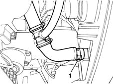
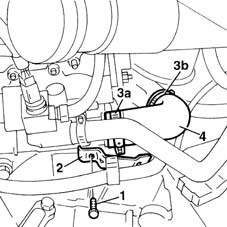
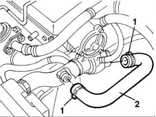

1088D23 sleeve from thermostat to rigid pipe carrying fluid to pump - r r
- Path
- Procedures > 10 ENGINE UNIT > 1088 ENGINE COOLING > 1088D COOLANT HOSES AND SLEEVES > 1088D23 sleeve from thermostat to rigid pipe carrying fluid to pump - r r
- Kind
- repair procedure (removal / refitting; the operation number is the code)
- Applies to
- all engines; all production periods
- Interactive page
- https://sloeber94.github.io/elrnDB-fMltpl/en/#/2891334
Applies to: engines: 1.6 16v; all production periods
 Removing
Removing
 Refitting
RefittingOpen the bonnet lid.
With the ignition key in the OFF position, disconnect the battery negative terminal.
1. Place a container under the vehicle to collect the coolant.

Applies to: engines: 1.6 16v; all production periods
1048A10 AIR CLEANER FILTERING ELEMENT - REPLACE
1. Undo the retaining bolt.
2. Move the wiring support bracket to one side.
3. Disconnect the pump coolant intake sleeve from collar (3a) on the thermostat and from collar (3b) on the rigid pipe.
4. Remove the sleeve from the engine bay.

Applies to: engines: 1.6 16v; all production periods
Refitting
RemovingFit the sleeve.
Connect the sleeve to the coolant intake hose and the thermostat.
Fit the wiring support bracket and screw in the bolt
1048A10 AIR CLEANER FILTERING ELEMENT - REPLACE
Connect the lower engine coolant hose.
Top up the engine coolant level
- 1088A10 Engine COOLANT - Check density' and top up level, if necessary
Connect the battery's negative terminal.
Close the bonnet lid.
Applies to: engines: 1.9 JTD 8V; all production periods
Removing
Refitting1048A10 AIR CLEANER FILTERING ELEMENT - REPLACE
Place a container under the vehicle to collect the engine coolant.
1. Disconnect the clamps.
2. Remove the sleeve from the thermostat to the pump rigid inlet pipe.

Applies to: engines: 1.9 JTD 8V; all production periods
Refitting
RemovingFit the sleeve joining the thermostat to the rigid pipe.
Use new clamps to secure the pipe to the thermostat and rigid pipe.
1048A10 AIR CLEANER FILTERING ELEMENT - REPLACE
- 1088A10 Engine COOLANT - Check density' and top up level, if necessary